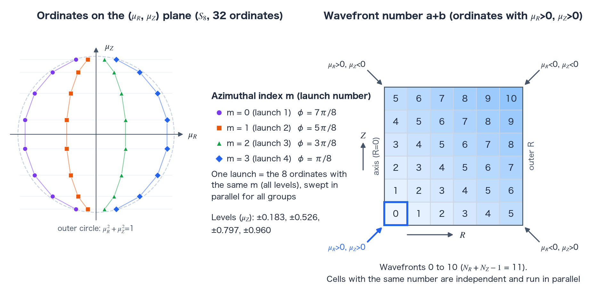

Radiation: SN transport reference
TENRYU's \(S_N\) solver is deterministic discrete-ordinates radiation transport for 1D — spherical by default, with the planar and cylindrical geometries of Mesh.geometry_1d also supported (the cylindrical geometry uses a product quadrature with \(L\) levels and \(n=2L^2\) ordinates) — and 2D axisymmetric RZ geometry. It follows a finite set of directions in every photon-energy group, then forms cell energies and face fluxes from directional specific intensities. It complements multigroup flux-limited diffusion (FLD) when optically thin streaming or strong anisotropy matters, at the cost of angular sweeps and source iterations whose work grows with ordinate count. Terms specific to this calculation are defined in the terms section.
The physics: when direction is the answer
FLD collapses the angular distribution into a scalar energy and a closure for its flux. Wherever photons stream through a transparent region, cast a shadow, or arrive from discrete directions — as in burn-through, gaps, and direct illumination — the angular distribution itself is part of the answer. Discrete ordinates replaces the continuous direction sphere by a quadrature set \(\{\boldsymbol\mu_m,w_m\}\), solves the transport equation along each fixed direction, and rebuilds radiation moments from weighted sums.
For one direction, the steady streaming–absorption operator is a first-order advection equation, so a cell depends only on its upwind neighbors and the mesh is solved in one upwind-to-downwind pass: a sweep. In RZ geometry the cells are processed diagonal by diagonal from the upwind corner that the signs of the direction select. Such a diagonal is the wavefront of the sweep: for directions with positive \(\mu_R\) and \(\mu_Z\) it is the diagonal \(k=i+j\), and cells of the same \(k\) are independent of each other. The linear-characteristic scheme, the 2D RZ default, integrates the exponential attenuation of a constant source exactly along the characteristic through each cell. Classic diamond differencing instead treats the cell average as the arithmetic mean of the inflow and outflow faces — an extrapolation that can produce negative intensities in optically thick cells — whereas the characteristic state is always positive for a nonnegative source.
Collisions make the directions communicate. In the discrete-ordinates method, an isotropic source term couples the sweeps through the angle-integrated scalar flux, so the sweeps sit inside a source iteration [2] whose convergence slows as the scattering ratio — the scattered fraction of total extinction — approaches one; optional diffusion synthetic acceleration (DSA) [2, 3] speeds the decay of that slow error mode (scope and default: terms section). The physical scattering opacity \(\sigma_{s,g}\) of 1D \(S_N\) is \(\sigma_s=\rho\kappa_s\) from the material's opacity.kappa_s (cm²/g, default 0), and table opacities carry no scattering (see EOS, opacity & ionization); 2D RZ \(S_N\) sets \(\sigma_{s,g}=0\) and does not use kappa_s. In 2D RZ and with the 1D linear-characteristic scheme, a Picard loop outside it refreshes \(T_e\), Planck fractions, and opacities and closes matter coupling with a cell-local active-set Newton solve — “active-set” meaning the nonnegativity-constrained groups are identified and held at their bound while the unconstrained set is solved (terms section). Unlike FLD, pure sn_transport has no Fleck effective scattering [1]: \(f=1\), and the raw \(\sigma^{PA}\) and \(\sigma^{PE}\) enter the nonlinear energy balance.
In 1D \(S_N\), direction also has memory. TENRYU persists the previous step's directional intensity in sn_psi_prev; reconstructing it isotropically from scalar energy every step would turn free streaming into artificial diffusion. The 2D RZ sweep is steady transport without a time-derivative term, so it carries no directional intensity from step to step; the time step \(\Delta t\) enters the update of the streaming-only state and the coupling to the matter. The price of solving for directional intensities is work scaling approximately as cells × groups × ordinates × iterations, plus angular and face workspaces. This remains the same static-medium approximation as FLD — no material-motion \(O(v/c)\) terms are present (the scope decision recorded in the repository's docs/NUMERICS.md §0.5 and §1.2).
Angular discretization and transport moments
The discrete-ordinates method (the \(S_N\) approximation [5]) replaces continuous angle space by a finite set \(\{\boldsymbol\mu_m,w_m\}\). In 1D spherical geometry TENRYU uses even-order Gauss–Legendre sets, with \(S_{16}\) as the production default. \(S_8\) is an allowed performance choice, but validation warns about the tradeoff and an \(S_8\)/\(S_{16}\) convergence gate covers it. In 2D RZ, a product quadrature supplies \(\boldsymbol\mu_m=(\mu_{R,m},\mu_{Z,m})\), with the azimuthal integral folded into the axisymmetric solve. It takes an \(N\)-point Gauss–Legendre quadrature in \(\mu_Z\) (\(N\) is the value of the key n_angles) and, for the azimuth \(\omega\), the midpoints of the \(N/2\) equal subintervals of the half circle \((0,\pi)\), with \(\mu_R=\sqrt{1-\mu_Z^2}\cos\omega\). The weight of each ordinate is the Gauss–Legendre weight of its \(\mu_Z\) divided by \(N/2\). The ordinate count is \(N^2/2\); \(S_{16}\) has 128 ordinates. The relation between the order \(N\) and the ordinate count is collected in the terms section.
The angular sweep produces cell-average intensity. Scalar flux and radiation energy density are
$$ \phi_{c,g}=\sum_m w_m\psi_{c,g,m}, \qquad E_{c,g}=\frac{\phi_{c,g}}{c}. $$Face states use the same ordinate set, giving the signed flux on an R or Z face \(f\),
$$ F^{SN}_{f,g}=\sum_m w_m\,\mu^{face}_m\,\psi^{face}_{m,g}. $$Here \(\mu^{face}_m\) is the cosine component along the normal of that face (\(\mu_{R,m}\) on R faces, \(\mu_{Z,m}\) on Z faces), and \(\psi^{face}_{m,g}\) is the face angular intensity obtained from the sweep. The global sign convention takes \(+R\) as positive on radial faces and \(+Z\) on axial faces. Forming cell and face moments from one angular solution ties the streaming update and the energy ledger of the energy escaping through the boundary (see Numerical foundations) to the same transport operator.
- \(\{\boldsymbol\mu_m,w_m\}\) is the angular quadrature: direction cosines and their integration weights. 1D spherical geometry uses even-order Gauss–Legendre sets with \(S_{16}\) as the production default; 2D RZ uses the product quadrature above. The weights sum to \(\int_{-1}^{1}d\mu=2\) in both the 1D Gauss–Legendre set and the 2D RZ product quadrature, with the azimuthal integral folded into \(\psi\). The continuous half-range moment is \(\int_{\mu>0}\mu\,d\mu=1/2\), but the discrete half-range moment \(\sum_{\mu_m>0}w_m\mu_m\) is not exactly 1/2: it is 0.5015 for 16-point Gauss–Legendre (\(S_{16}\)). The sum over the ordinates entering a 2D RZ Z face, \(\sum_{\mu_{Z,m}>0}w_m\mu_{Z,m}\), takes the same value, and both approach 1/2 as \(N\) grows — the continuous value 1/2 is the origin of the factor 2 in the incident intensity of the Marshak boundary below.
- \(\phi_{c,g}=\sum_mw_m\psi_{c,g,m}\) is the zeroth angular moment, or scalar flux, and \(E_{c,g}=\phi_{c,g}/c\) is the group radiation energy density stored in the cell.
- \(F^{SN}_{f,g}\) is the first angular moment on a face. Its sign is global rather than cell-outward, so one single-valued flux enters the two neighboring cell divergences with opposite signs.
- The donor-\(\theta\) limiter is an export limiter on that face moment. It scales an outgoing face flux only when its upwind cell would otherwise send more radiation energy than is available during the step (defined in the terms section).
- \(\psi_{\rm in}\) is the prescribed incoming half-range intensity at a boundary. A 2D Marshak face gives every incoming ordinate \(\psi_{{\rm in},m}=2F_{\rm inc}\). The factor 2 corresponds to the continuous half-range moment 1/2: in the continuous integral the incident flux is \(\int_{\mu>0}\mu\,(2F_{\rm inc})\,d\mu=F_{\rm inc}\). With the discrete set, the flux actually injected is \(2F_{\rm inc}\sum_{\mu_m>0}w_m\mu_m\), which is 1.003 \(F_{\rm inc}\) for \(N=16\).

Terms used in this calculation
The description of the \(S_N\) solver uses several words in a sense that is specific to this implementation, in the angular quadrature, the sweeps, the iterations, the boundaries, and the coupling to the matter. They are defined here with the meaning they have in the 1D and 2D RZ \(S_N\) solvers.
Order N and the number of ordinates
The order \(N\) is the value of the key Radiation.sn_transport.n_angles, an integer that sets the size of the angular quadrature; the subscript of \(S_{16}\) is the order. The allowed values are 2, 4, 8, 16, and 32, and the default is 16, both in Studio and when a deck does not set the key. With the 1D cylindrical geometry (Mesh.geometry_1d="cylindrical") only \(N=2L^2\) (\(L=2,\dots,32\): 8, 18, 32, 50, …) is allowed, so the default 16 is rejected.
An ordinate is a discrete propagation direction \(\boldsymbol\mu_m\) selected by the quadrature, together with its weight \(w_m\); the sweep runs once per ordinate. The ordinate count is \(N\) in 1D and \(N^2/2\) in 2D RZ. The 2D RZ quadrature is the product of the \(N\) values of \(\mu_Z\), each called a level, and \(N/2\) azimuth points per level. The weight of an ordinate is the Gauss–Legendre weight of its level divided by \(N/2\), and the weights of all ordinates sum to 2 (the formulas are in the angular discretization section; the layout of the \(N=8\) ordinates is in Figure A, left). The ordinate counts are:
| Order \(N\) | Ordinates in 1D | Ordinates in 2D RZ |
|---|---|---|
| 4 | 4 | 8 |
| 8 | 8 | 32 |
| 16 | 16 | 128 |
| 32 | 32 | 512 |
A higher order reduces the angular truncation error and the ray effect that come from the finite number of ordinates. Sweep work and the memory of the per-direction arrays grow in proportion to the ordinate count, that is, as \(N^2\) in 2D RZ. Selecting \(N=8\) produces a warning at setup.
The key angular_quadrature (default "level_symmetric_16") is checked only to be one of "level_symmetric_8", "level_symmetric_16", "level_symmetric_32", and "product". Giving "level_symmetric_N" sets n_angles to \(N\); the kind of quadrature does not change. Despite the name, no level-symmetric quadrature is implemented.
Sweep, wavefront, and launch
A sweep is one pass, for a single ordinate, that solves the transport equation cell by cell from upwind to downwind and obtains the cell-average and face intensities of all cells. The signs of the ordinate decide which side is upwind. The sweep of one ordinate is independent of the sweeps of the other ordinates, so the ordinates can run in parallel.
A wavefront is a set of cells within one sweep that do not depend on each other and can be processed at the same time. In 2D RZ, cells belong to the same wavefront when the sum \(a+b\) of their step counts \(a\) along R and \(b\) along Z, counted from the upwind corner, is equal (Figure A, right). An \(N_R\times N_Z\) mesh has \(N_R+N_Z-1\) wavefronts, processed in increasing order of the sum. A radiation front that moves through space is called a front, not a wavefront.
A launch is one call of a CUDA function (a CUDA kernel) on the GPU. The 2D RZ sweep launches once for each azimuthal index \(m=0,1,\dots,N/2-1\) in every source iteration, \(N/2\) launches in all. One launch has \(N\times G\) CUDA blocks (a block is a group of threads; \(G\) is the number of groups); one block handles one ordinate of one group, and its threads share the cells of a wavefront. The index \(m\) orders the ordinates of each level from the largest negative \(\mu_R\) to the largest positive \(\mu_R\). The launches follow the order of \(m\) because the ordinates of one level receive the outgoing intensity of the previous ordinate through the angular redistribution term of the azimuthal direction (sweep section). All ordinates with negative \(\mu_R\) are processed before all ordinates with positive \(\mu_R\), so the outgoing intensity of the mirrored ordinate of the axis reflective parity is available within the same iteration. The 1D sweep is handled by one warp (a CUDA group of 32 threads) per group, and its launches are organized differently.
Source iteration and outer iteration
Source iteration converges the circularity in which the isotropic scattering source \(\sigma_s\phi/2\) depends on the scalar flux \(\phi\) obtained by the sweep: it builds the source from the \(\phi\) of the previous iteration, sweeps all ordinates, and obtains a new \(\phi\), by plain substitution. In the key names it is the inner iteration, as opposed to the outer iteration (inner appears in max_inner_iterations and inner_tol). It stops when the relative change of the scalar flux (the maximum over cells and groups) is at most inner_tol (default 1e-6); the cap is max_inner_iterations (default 100). When \(\sigma_s\) is zero everywhere, the 1D linear-characteristic scheme does not iterate and performs one sweep per outer iteration. 2D RZ needs the source iteration only for the outer-R and Z reflective boundaries.
The outer iteration solves the transport at a fixed matter electron temperature \(T_e\), then solves the coupling to the matter to update \(T_e\), re-evaluates the opacities and Planck fractions at the new \(T_e\), and re-solves the transport, repeating until \(T_e\) converges. It is a Picard iteration, since it is plain substitution without relaxation (mixing with the previous value). The cap is max_outer_iterations (default 20) and the tolerance is outer_tol (default 1e-4; in 1D the tolerance is at least ten times outer_tol_hydro_error_scale, default 1e-5). The 1D linear-characteristic scheme also stops the iteration when, after at least 5 iterations, the ratio of the residual to the residual two iterations earlier exceeds outer_tol_stagnation_factor (default 0.5). The outer iteration of the 1D linear-discontinuous scheme is a Newton iteration on the nodal electron temperatures.
Reflective parity
Reflective parity is the boundary condition on the 2D RZ axis \(R=0\): the incoming intensity of an ordinate \((\mu_R,\mu_Z)\) with \(\mu_R>0\) that enters the domain from the axis is the intensity with which the mirrored ordinate \((-\mu_R,\mu_Z)\), the same \(\mu_Z\) with the sign of \(\mu_R\) reversed, reaches the axis: \(\psi(R=0,\mu_R,\mu_Z)=\psi(R=0,-\mu_R,\mu_Z)\). The axis is a symmetry axis rather than a physical wall: a ray through the axis continues straight, and because the field is axisymmetric, the intensity of the ordinate \((-\mu_R,\mu_Z)\) arriving at the axis becomes the intensity of the ordinate \((\mu_R,\mu_Z)\) leaving it. The quadrature is built so that every ordinate has a partner of the same weight with only the sign of \(\mu_R\) reversed, and the map of these pairs is built in the setup of the sweep (step 1).
The key Radiation.sn_transport.boundary.inner_r (default "reflect_parity") names the axis condition. "reflect" is also accepted, but the 2D RZ \(S_N\) solver always treats the axis by this rule, and the value does not change the behavior. Studio writes "reflect_parity".
Streaming-only state and the donor-θ limiter
The streaming-only state \(E^*\) is the group energy density that a cell would have after the transport of the step alone, with no exchange with the matter. In 2D RZ it is \(E_g^*=E^n_g-\Delta t\,\nabla\cdot F\), built from the divergence of the single-valued face fluxes after the donor-\(\theta\) limiter (the cell-by-cell formula is in the sweep section). \(E^*\) is not floored. A negative part passes unchanged into the balance of the matter closure, where the active-set Newton method compensates for it (next entry). The quantity is needed because the coupling of radiation and matter is solved in two parts: the transport (\(E^*\)) and the cell-local matter balance.
The donor-\(\theta\) limiter is a factor \(\theta\le1\) applied to the face fluxes leaving a cell so that the radiation energy the cell exports during the step does not exceed the sum of its own energy and the energy flowing in. The cell that gives radiation away is called the donor. Let \(O_c\) be the energy density that leaves cell \(c\) during the step (the sum of the outgoing fluxes times the face areas, multiplied by \(\Delta t/V_c\)). The 2D RZ limiter has two passes. Pass 1 ignores the inflow: \(\theta^{(1)}_c=\min[1,E^n_c/O_c]\). Pass 2 adds the inflow energy density \(I_c\) that the upwind donors can actually deliver with their pass-1 factors: \(\theta_c=\min[1,(E^n_c+I_c)/O_c]\). Finally, each face flux is multiplied once by the \(\theta_c\) of the cell upwind of that face. A shared face keeps a single limited flux, so the contributions to neighboring cells still cancel, and the limited \(E_c^*\) is nonnegative apart from rounding.
The limiter is always on and has no namelist key. \(\theta\) lies between 0 and 1, and at 1 the limiter does not act. The 1D linear-characteristic scheme sets the factor of each cell in the order of the flow (step 4).
Active-set Newton method and the material closure
The material closure is the cell-local equation that closes the energy exchange between radiation and matter. Its inputs are the streaming-only state \(E_g^*\) and the electron temperature \(T_e^n\) at the start of the step; its outputs are the electron temperature \(T_e\) and the consistent group energy density \(E_g^+(T_e)\). With \(\lambda^{PA}_g=c\Delta t\,\sigma^{PA}_g\) and \(\lambda^{PE}_g=c\Delta t\,\sigma^{PE}_g\) (\(\sigma^{PA}_g\) and \(\sigma^{PE}_g\) are the absorption and emission opacities of group \(g\)),
$$ E_g^+(T_e)=\max\left[\frac{E_g^*+\lambda^{PE}_g\,a_{\rm eV}T_e^4\,b_g(T_e)}{1+\lambda^{PA}_g},\;0\right]. $$The equation to solve is the residual \(R(T_e)=U_e(T_e)-U_e(T_e^n)+\sum_g[E_g^+(T_e)-E_g^*]=0\), which conserves the total energy of radiation and matter (\(U_e=\rho e_e\) is the matter energy density). Positivity, \(E_g^+\ge0\), is imposed only on the final \(E_g^+\); a negative \(E_g^*\) enters the residual and is handled as an exchange with the matter.
The active set is the set of groups held at \(E_g^+=0\), that is, the groups for which the nonnegativity constraint is active. The derivative of \(R\) with respect to \(T_e\), \(\rho c_{v,e}+\sum_{g:\,E_g^+>0}[\lambda^{PE}_g/(1+\lambda^{PA}_g)]\,4a_{\rm eV}T_e^3b_g\), receives contributions only from the unconstrained groups (\(E_g^+>0\)) and omits \(db_g/dT_e\) (\(c_{v,e}\) is the electron specific heat). The residual itself evaluates \(b_g\) at the trial temperature, so the converged solution is exact.
The active-set Newton method solves \(R(T_e)=0\) for \(T_e\) while keeping a bracket \([T_{\rm floor},T_{\rm hi}]\) around the root, where \(T_{\rm floor}\) is the temperature floor and \(T_{\rm hi}\) is an upper bound set by the total energy of matter and radiation. When a Newton step leaves the bracket, or the derivative is not positive, the bracket is bisected. The iteration runs at most 60 times (a value fixed in the code, not a namelist key) and stops when the residual falls below 64 times the machine epsilon times the energy scale, or when the bracket width reaches machine precision. When no bracket can be found (\(R(T_{\rm floor})>0\), or the expansion of the upper bound fails), it raises a flag that requests a retry of the whole time step. Because of the active set, the total energy of matter and radiation is conserved cell by cell even when \(E^*\) is negative.
Diffusion synthetic acceleration (DSA)
Diffusion synthetic acceleration (DSA) removes the slow error of the source iteration with a correction estimated from a diffusion equation [2, 3]. When the scattering ratio is close to one, the spatially smooth part of the source-iteration error shrinks only slightly per iteration. After a sweep, DSA solves a diffusion equation whose right-hand side is the scattering residual \(\sigma_s(\phi^{\rm sweep}-\phi^{\rm old})\) to obtain a correction \(\delta\phi\), and adds it to \(\phi\) (\(\phi\leftarrow\max(\phi+\delta\phi,0)\)); here \(\phi^{\rm sweep}\) is the scalar flux from the sweep and \(\phi^{\rm old}\) is the scalar flux of the previous iteration that the sweep used as input. In 2D RZ, the diffusion coefficient is \(D=1/(3\sigma_t)\) (\(\sigma_t=\sigma_a+\sigma_s\) is the total extinction; values on cell boundaries are harmonic means), and the equation is solved by a fixed 50 Jacobi iterations. The 1D linear-characteristic scheme instead solves, group by group, a pentadiagonal system consistent with the discretization of its sweep directly.
The key Radiation.sn_transport.dsa_enabled (default true) switches DSA. The 1D linear-discontinuous scheme does not read this key; when there is scattering, it uses an acceleration of the same kind based on the P1 system consistent with its sweep. Because the right-hand side of the correction is proportional to \(\sigma_s\), the correction is zero when \(\sigma_s=0\), and DSA makes no difference to the result. 2D RZ always has \(\sigma_s=0\), so in the current 2D RZ solver DSA does not affect the result.
Nodal representation of the linear-discontinuous scheme
The linear-discontinuous scheme is the default 1D spatial scheme (spatial_scheme="linear_discontinuous"). It takes the intensity, the emission and scattering sources, and the electron specific energy to be linear functions inside each cell and stores them as the values at two nodes placed at the left and right ends of the cell. Here a node is one of the two storage points of a cell, counted apart from the mesh nodes. “Discontinuous” means that, on a face shared by two neighboring cells, the nodal values on the two sides need not agree. The linear-characteristic scheme assumes a constant source in the cell, whereas the linear-discontinuous scheme keeps a slope in the cell, so it preserves the diffusion-limit flux even in thick media whose cell optical depth \(\sigma\Delta r\) exceeds 1 (linear-discontinuous section).
The nodal values are two per ordinate for the intensity and two for the electron specific energy; the previous-step intensity (sn_psi_prev) and the in-cell temperature profile (the difference of the electron specific energy between the right and left nodes) are carried from step to step. The scheme is 1D only: setting spatial_scheme="linear_discontinuous" in 2D RZ is an error at setup.
Sweeps and the finite-volume update on RZ meshes
Each 2D RZ source iteration sweeps the structured mesh from upwind to downwind for every group and direction. A source iteration launches the sweep once per azimuthal index \(m=0,1,\dots,N/2-1\); one launch sweeps the ordinates of all groups and all \(\mu_Z\) levels in parallel (one CUDA block handles one ordinate of one group). The launches are split by \(m\) because ordinates of the same \(\mu_Z\) level pass the outgoing intensity of the previous ordinate to the next one, in the order of \(m\), through the angular redistribution term of the azimuthal direction (the angular-derivative term that appears in a curvilinear coordinate system because the direction cosines of a ray that travels in a straight line change with position). Inside each block, cells are processed in a diagonal wavefront order that respects the R and Z dependencies, starting from the upwind corner that the signs of \(\mu_R\) and \(\mu_Z\) of the ordinate select. Per-direction cell averages and face states occupy private workspaces and are reduced in increasing direction index. This exposes direction parallelism while fixing accumulation order. Launches, wavefronts, and related terms are defined in the terms section.
The 2D RZ default (in 1D, when set) spatial_scheme="linear_characteristic" (LC) integrates exponential attenuation through a constant-source cell. The older diamond_difference (DD) path is a deprecated option kept for regression tests. LC preserves thin-limit finite-volume source scaling while replacing extrapolated DD outflow by a positive characteristic state for nonnegative sources.
For a cell \(c=(i,j)\), the streaming-only state (terms section) comes from the divergence of the single-valued face fluxes:
$$ E^{*,flux}_{i,j,g}=E^n_{i,j,g}-\Delta t\, \frac{A^R_+F^R_+-A^R_-F^R_-+A^Z_+F^Z_+-A^Z_-F^Z_-}{V_{i,j}}. $$Here \(E^n\) is the energy density at the start of the step, \(V_{i,j}\) the cell volume, and \(F^R_\pm\) and \(F^Z_\pm\) the signed fluxes on the R and Z faces of the cell (the subscript \(+\) marks the face on the larger-coordinate side and \(-\) the one on the smaller side; the values are those after the donor-\(\theta\) limiter). \(A^R_\pm\) and \(A^Z_\pm\) are the areas of these faces: \(A^R=2\pi r\Delta z\) (\(r\) is the face radius and \(\Delta z\) the axial width of the cell) and \(A^Z=\pi(r_+^2-r_-^2)\) (\(r_\pm\) are the outer and inner radii of the cell). The axis face has zero area and its buffers are zeroed before evaluating divergence. \(E^{*,flux}\) is not floored. A donor-\(\theta\) limiter instead scales outgoing flux when a cell would export unavailable energy (terms section). Each shared face retains one value, so adjacent-cell contributions cancel.
The 1D linear-discontinuous scheme (the 1D default)
A spatial closure that keeps the emission and scattering source constant in each cell puts the wrong flux into an optically thick, graded medium once the cell optical depth \(\sigma\Delta r\) exceeds about 1: for an emission \(\propto1+4r^2\) in a sphere (\(\sigma=40\), \(S_8\)), the linear-characteristic flux is 3.2 times the diffusion flux at \(\sigma\Delta r=4\). The 1D default spatial_scheme="linear_discontinuous" carries the intensity, the emission and scattering source, and the electron specific energy at the two nodes of every cell (terms section), linear inside the cell, and carries the in-cell temperature profile from step to step. This scheme restores the diffusion-limit flux in optically thick cells (rebuilding the profile from cell means at every step is several times less accurate).
The basis is linear in the cell, \(b_L=(r_R-r)/h\), \(b_R=(r-r_L)/h\) (\(r_L\) and \(r_R\) are the left and right node positions and \(h=r_R-r_L\) is the cell width), with lumped masses \(M_j=\int b_jA\,dr\) (the area \(A\) is \(4\pi r^2\) in the sphere, \(2\pi r\) in the cylinder, and 1 in the slab). The transport equation of every ordinate becomes two nodal equations with upwind face traces (the neighbor's node on the inflow side, the cell's own node on the outflow side) and, in the sphere and the cylinder, the angular redistribution (Carlson coefficients and a weighted diamond [4]). The weighted sum over nodes and ordinates is the exact cell balance, and a uniform isotropic field satisfies every row exactly. On the GPU one warp per group sweeps a half-set of ordinates as a diagonal wavefront over the cells.
The matter satisfies \(\rho(e_j-e^n_j)=\Delta t\,(\sum_g\sigma^{PA}_g\phi_{g,j}-\sum_gc\sigma^{PE}_ga_{\rm eV}T_j^4b_g(T_j))\) at every node \(j\), where \(e_j\), \(T_j\), and \(\phi_{g,j}\) are the nodal electron specific energy, electron temperature, and group scalar flux. A Newton iteration on the nodal electron temperatures solves the coupling to the radiation; GMRES (the generalized minimal residual method) solves each linearized coupling system, preconditioned by a gray low-order correction (a P1 system consistent with the sweep). The P1 system approximates the angular distribution of the intensity by its zeroth and first angular moments only (the P1 approximation) and is a block tridiagonal system with four unknowns per cell (the zeroth and first moments at each of the two nodes), consistent with the discretization of the sweep. The preconditioner solves one gray system for all groups together, while the acceleration of the scattering (below) solves one system per group. The default grey_preconditioner="auto" applies the preconditioner only in the Newton iterations where the largest local gain of the correction (the fraction by which it enlarges a smooth absorption-rate error in an infinite medium) exceeds 0.1 ("on" always applies it, "off" never; all three settings converge to the same solution under the same tolerances and differ only in rounding). Physical scattering is converged inside every transport solve by source iteration accelerated with the same P1 system (an acceleration of the same kind as DSA; terms section). Each iteration's nodal energies follow from the transport's own absorption and the emission that entered its final sweep, so radiation and matter exchange the same energy and the step balance closes for any iterate (measured imbalance below \(3\times10^{-15}\) relative).
A pure absorber is attenuated by \(1/(1+\tau+\tau^2/2)\) per cell of optical depth \(\tau\) along the ordinate (second-order accurate; the linear-characteristic sweep uses \(e^{-\tau}\)). For problems dominated by the uncollided attenuation of a narrow beam through cells of optical depth above 1, "linear_characteristic" is more accurate. To restart from a 1D \(S_N\) checkpoint written before this scheme became the default, set spatial_scheme="linear_characteristic" to continue with the former scheme.
Same-time collisions, material closure, and iteration
The steps below are those of 2D RZ and of the 1D linear-characteristic scheme (the 1D linear-discontinuous scheme is described in the section above).
Construct quadrature and dependency order. Build the even-order Gauss–Legendre set in 1D or the product quadrature in RZ, with the maps between ordinates that mirror each other at reflective boundaries (axis reflective parity, outer-R and Z reflection). RZ also forms the launches in the order of the azimuthal index \(m\) and the upwind dependency wavefront for each direction; the direction index is also the fixed later reduction order.
Sweep each group and direction. The ordinate equation combines streaming, same-time extinction, lagged isotropic scattering, and material emission. In the 1D linear-characteristic scheme it is a backward-Euler equation with the persisted transient source from
sn_psi_prev(the previous-step intensity \(\psi^n\) divided by \(c\Delta t\)); the 2D RZ equation has no time-derivative term. The production LC path integrates the constant-source exponential attenuation from each upwind state. Cell averages and downwind face states are written to private per-direction workspaces, preventing cross-direction accumulation races.Reduce angular moments deterministically. After the directional sweeps, CUDA kernels sum the per-direction workspaces in increasing direction index to form \(\phi\), \(P_{rr}\) (the rr component of the second angular moment — the radiation-pressure moment, kept diagnostically), and the single-valued R/Z face fluxes. This preserves the prior serial-direction accumulation order bit-exactly while exposing direction-level parallelism.
Apply conservative streaming. The single-valued face moments enter the finite-volume flux-divergence equation above. In 2D RZ a two-pass donor-\(\theta\) limiter (terms section) first caps each donor by stored energy, then credits only inflow that the upstream pass-1 donors can deliver; each face flux is finally scaled once by its upwind donor. The streaming state \(E_g^{*,flux}\) is not floored, and the limited flux remains single-valued so internal-face contributions cancel. The 1D linear-characteristic scheme weights the inflow by the upstream donors' final factors and sets each cell's factor in the order of the flow (left to right, then right to left): on meshes with cells narrower than \(c\Delta t\), a cell that passes on what it receives is not limited, and the transport does not stall.
Converge same-time scattering. At a fixed matter state, the unknown of the source iteration is the scalar flux \(\phi_{c,g}\): the isotropic source needs \(\phi\), but \(\phi\) is only known after sweeping with that source. This isotropic source is physically the scattering term \(\sigma_s\phi/2\). \(\sigma_s\) is \(\rho\kappa_s\) in 1D (the default of \(\kappa_s\) is 0) and 0 in 2D RZ. With \(\sigma_s=0\) the source vanishes identically, and 2D RZ needs the source iteration only for the outer-R and Z reflective boundaries (the incoming intensity of a mirrored ordinate uses the outgoing intensity of the previous iteration). Source iteration closes this circularity by plain substitution — each pass solves every direction exactly for the lagged source, then rebuilds the source from the new \(\phi\) — and stops when the relative scalar-flux change between passes satisfies
inner_tol(default1e-6). The cap ismax_inner_iterations(default 100); if it is reached without convergence, the final iterate is used (a warning is logged once in 1D; in 2D RZ that outer iteration is not counted as converged). Per-group DSA is optional and speeds the decay of the source-iteration error without replacing the high-order face flux (scope and default: terms section).-
Solve the material closure in the outer iteration. Pure
$$ F(T_e)=\rho\frac{e_e(\rho,T_e)-e_e(\rho,T_e^n)}{\Delta t} -\sum_g c\sigma^{PA}_gE_g +\sum_g c\sigma^{PE}_g a_{eV}T_e^4b_g(T_e)=0. $$sn_transportsets \(f=1\), uses raw \(\sigma^{PA}_g\) for absorption/deposition and \(\sigma^{PE}_g\) for emission, and solves the cell-local balance (the active-set equation; terms section)Here \(a_{\rm eV}\) is the eV-unit radiation constant, \(\rho\) the density, \(e_e\) the electron specific energy, \(T_e^n\) the electron temperature at the start of the step, \(c\) the speed of light, \(\Delta t\) the time step, and \(b_g\) the Planck fraction of group \(g\) (the fraction of the Planck distribution that falls in group \(g\)). The \(E_g\) in the balance stands schematically for the group energies being closed. The closure's input is the streamed, pre-coupling \(E_g^*\) (the \(E^{*,flux}_g\) above, which remains unfloored); what the closure returns is the nonnegative group energy \(E_g^+(T_e)\) consistent with the temperature \(T_e\). Positivity applies only to that final \(E_g^+(T_e)\), and the residual evaluation and writeback use the identical active-set state. Updated \(T_e\), \(b_g\), and opacities return to the sweeps, with
$$ r_k=\max_c\frac{|T^{k+1}_{e,c}-T^k_{e,c}|} {\max(T^{k+1}_{e,c},T_{floor})} $$tested against \(r_{\rm tol}\) (\(T_{floor}\) is the configured temperature floor). In 1D, \(r_{\rm tol}=\max(\texttt{outer_tol},10\,\texttt{outer_tol_hydro_error_scale})\) (defaults \(10^{-4}\) and \(10^{-5}\)); in 2D RZ, \(r_{\rm tol}=\texttt{outer_tol}\).
outer_tol_hydro_error_scaleis read in 1D only; it represents the time-integration error level of the hydrodynamic side of the operator split, and convergence demands tighter than that scale carry no meaning, so ten times it floors the tolerance.max_outer_iterationsdefaults to 20. The outer unknown is thus \(T_e\), with \(b_g\) and the opacities riding on it; like the source iteration, the update is undamped Picard substitution, and every outer pass re-solves the transport from the same step-start state — in 1D the transient source from \(\psi^n\) (sn_psi_prev), in 2D RZ the step-start energy density \(E^n\), and the matter balance referred to \(e_e(\rho,T_e^n)\) — so a pass replaces the iterate rather than accumulating on it. If the cap is exhausted without meeting \(r_{\rm tol}\), the final iterate is accepted withsn_convergedleft false. The 1D linear-characteristic scheme additionally stops, accepting the result, when after at least 5 iterations the ratio of the residual to the residual two iterations earlier exceedsouter_tol_stagnation_factor(default 0.5); it then recordssn_outer_stagnated=true,sn_convergedbecomes true, and a warning is logged. In 2D RZ, for an outer iteration whose residual is at mostouter_tolwhile the source iteration has not converged, the final source-iteration residual is compared with the previous one, and once the relative change stays at or below \(10^{-6}\) three times in a row, redundant identical-input sweeps stop. That exit recordssn_outer_stagnated=trueand, ifinner_tolwas not met, keepssn_converged=false— these are internal solver-state flags surfaced through run-log warnings and driver diagnostics, not namelist keys or output datasets. Close the transport energy ledger. The converged fields define
rad_dep\(=c\sigma^{PA}E_gV\Delta t\) andrad_emit\(=c\sigma^{PE}a_{\rm eV}T_e^4b_gV\Delta t\). Boundary escape is integrated from the same \(\theta\)-limited single-valued face array consumed by the streaming update; Marshak inflow is paired separately. One value per shared face makes interior divergence telescope, leaving only radiation–matter exchange and the discrete boundary integral.
Boundary conditions and choosing SN versus FLD
The \(R=0\) axis uses reflective parity (terms section). Outer R is vacuum by default, with zero incoming intensity; reflect supports closed-cylinder benchmarks in 2D. Bottom and top Z faces may independently be vacuum, reflect, or Marshak. A 2D Marshak face injects steady gray flux \(F_{inc}\) as \(\psi_{in,m}=2F_{inc}\) (the factor 2 corresponds to the continuous half-range moment 1/2; with the discrete set the injected flux differs slightly — see above). Its discrete net boundary flux drives both the finite-volume update and escape accounting.
Choose \(S_N\) when a transparent gap, free-streaming front, directional illumination, shadow, or ray effect makes angular distribution part of the answer. FLD closes angle dependence into scalar energy and limited diffusive flux, and is generally cheaper and more robust in optically thick, nearly isotropic regions. \(S_N\) work scales approximately as cells × groups × ordinates × iterations and needs angular and face workspaces. Lower order costs less but increases angular truncation and ray effects, so quantities of interest should be checked in a series of runs of increasing order, \(S_8\), \(S_{16}\), and \(S_{32}\).
Namelist controls
These are selected controls under Radiation. See the namelist reference for the complete schema and combination rules. The defaults in the table are the values used when a deck does not set the key. Of the Radiation.sn_transport keys, Studio writes only n_angles (Studio's default is 16, the same as the default for an unset key) and boundary (inner_r, outer_r, and, in 2D RZ, z); it writes no other key.
| Key | Default / example | Purpose |
|---|---|---|
Radiation.mode | "sn_transport" | Select this deterministic discrete-ordinates solver. |
Radiation.groups | 1 | Number \(G\) of photon-energy groups, shared with FLD. |
Radiation.group_bounds_eV | \(G+1\) entries | Energy-group boundaries in eV, shared with FLD. |
Radiation.sn_transport.n_angles | 16 | Quadrature order \(N\). Allowed values are 2, 4, 8, 16, and 32. With the 1D cylindrical geometry (Mesh.geometry_1d="cylindrical") only \(N=2L^2\) (\(L=2,\dots,32\)) is allowed, so the default 16 is rejected. The ordinate count is \(N\) in 1D and \(N^2/2\) in 2D RZ, so sweep work grows nearly linearly with \(N\) in 1D and nearly as \(N^2\) in 2D RZ. 2D RZ runs \(N=2\) as \(N=4\). |
Radiation.sn_transport.spatial_scheme | 1D: "linear_discontinuous"2D RZ: "linear_characteristic" | Spatial scheme: linear-discontinuous is the 1D default, LC the 2D RZ default; DD remains for regression tests. |
Radiation.sn_transport.grey_preconditioner | "auto" | Gray preconditioner of the 1D linear-discontinuous scheme; "auto" applies it only in iterations where its gain exceeds 0.1; also "on", "off". |
Radiation.sn_transport.max_outer_iterations | 20 | Cap on material/opacity outer iterations (Newton iterations in the 1D linear-discontinuous scheme). |
Radiation.sn_transport.outer_tol | 1e-4 | Base electron-temperature tolerance of the outer iteration (Picard, or Newton in the 1D linear-discontinuous scheme). |
Radiation.sn_transport.outer_tol_hydro_error_scale | 1e-5 | Hydro time-error scale that floors the 1D outer-iteration tolerance (the tolerance is at least ten times this value); not used in 2D RZ. |
Radiation.sn_transport. | 0.5 | Residual-ratio threshold at which the 1D linear-characteristic outer iteration stops as stagnated (terms section). |
Radiation.sn_transport.inner_tol | 1e-6 | Scalar-flux source-iteration tolerance; in the 1D linear-discontinuous scheme, the GMRES residual reduction. |
Radiation.sn_transport. | 100 | Cap on source iterations; if it is reached without convergence, the final iterate is used. |
Radiation.sn_transport.dsa_enabled | true | Whether DSA is used; read by the 1D linear-characteristic scheme and 2D RZ (terms section). |
Radiation.sn_transport. | "level_symmetric_16" | Name of the quadrature. One of "level_symmetric_8", "level_symmetric_16", "level_symmetric_32", and "product"; "level_symmetric_N" only sets n_angles to \(N\) (terms section). |
Radiation.sn_transport.boundary.inner_r / outer_r | "reflect_parity" / "vacuum" | Axis condition (reflective parity; "reflect" is also accepted, but 2D RZ always treats the axis by reflective parity) and outer-R face type ("vacuum" or "reflect" in 2D RZ, "vacuum" or "marshak" in 1D). |
Radiation.sn_transport.boundary.z / z_bottom / z_top | "vacuum" | Common or face-specific 2D Z boundary; reflect and Marshak are available. |
Verification
test_sn_1d_ldcompares the GPU linear-discontinuous sweep and angular moments with a host (CPU-side) implementation of the same equations in the three 1D geometries, and the P1-accelerated source iteration of thick scattering with a dense direct solution (error at most \(2.5\times10^{-12}\)).test_sn_1d_ld_stepchecks the equilibrium fixed point (change at most \(3\times10^{-15}\)); the step energy balance with vacuum and Marshak boundaries, scattering, void cells (see void materials), and a flux drive; Marshak waves (maximum temperature difference, relative to the drive temperature, between 10 cells at \(\sigma\Delta r=4\) and 160 cells: 0.101 in the sphere and 0.068 in the slab, against 0.695 and 0.595 with LC); mesh convergence of slab attenuation; and six groups with a frequency-dependent opacity (every step converged, run-to-run bitwise identical).test_r2_quadrature_sweep(the r2 in the name is the symbol of the test group for the \(S_N\) quadrature and Marshak-reference checks of 2D RZ, explained in the tag legend) runs 2D RZ with \(N=8\), 16, and 32 (32, 128, and 512 ordinates) and gates monotone Cauchy convergence toward the \(N=32\) reference solution.test_sn_1d_s8_vs_s16_convergencerequires the maximum relative \(S_8\)-versus-\(S_{16}\) energy difference on a GXII (GEKKO XII)-like 1D profile to be \(<0.05\), gating the lower-cost \(S_8\) option.test_sn_face_flux_conservationandtest_sn_2d_rz_step_total_energy_conservationcheck that single-valued face fluxes, divergence, and the radiation–matter step balance close; the 2D step-total-energy identity is gated at \(10^{-10}\).test_sn_2d_rz_bug25_escape_ledgermatches escape to the discrete boundary-face integral to \(10^{-12}\) relative.test_sn_2d_rz_mg_grey_collapsechecks, in 2D RZ, that the sum over groups of the multigroup \(S_N\) solution equals the gray (one-group) calculation under the same conditions (the acceptance-check symbol I6 is explained in the tag legend). With the material heat capacity made so large that the temperature stays fixed, it requires the relative L2 difference \(\varepsilon_2\le10^{-6}\) for both \(\sum_gE_g\) and \(\sum_gF_{z,g}\) against the gray run. For \(G=8\), productioninner_tol=1e-6measured \(4.5\times10^{-9}\) in energy and \(3.0\times10^{-7}\) in \(F_z\); tighteninginner_tolto \(10^{-12}\) recovered \(6.4\times10^{-15}\) and \(2.9\times10^{-13}\), within the ceiling of \(10^{-12}\). The ceiling exists so that a defect in the per-group machinery cannot hide under the truncation error of the production tolerance. A check of the same agreement on a radiative shock coupled to the hydrodynamics (the scripttools/validation/run_i6_sn_mg_collapse.py; its criterion is a relative L2 difference of \(10^{-3}\)) extends this one.- Of the test group that checks the \(S_N\) quadrature and the Marshak reference of 2D RZ (R2 in the tag legend), the comparison of the z profile of a 2D RZ slab driven through a Marshak boundary (the 1D profile averaged over the radius by volume) with an independent 1D \(S_N\) reference solution is gated at a relative L2 difference of 0.15; the production \(S_{16}\) deck measured \(7.94\times10^{-3}\).
References
- J. A. Fleck, Jr. and J. D. Cummings, "An Implicit Monte Carlo Scheme for Calculating Time and Frequency Dependent Nonlinear Radiation Transport," J. Comput. Phys. 8, 313–342 (1971). doi:10.1016/0021-9991(71)90015-5
- M. L. Adams and E. W. Larsen, "Fast Iterative Methods for Discrete-Ordinates Particle Transport Calculations," Prog. Nucl. Energy 40, 3–159 (2002). doi:10.1016/S0149-1970(01)00023-3
- E. W. Larsen, "Unconditionally Stable Diffusion-Synthetic Acceleration Methods for the Slab Geometry Discrete Ordinates Equations. Part I: Theory," Nucl. Sci. Eng. 82, 47–63 (1982). doi:10.13182/NSE82-1
- J. E. Morel and G. R. Montry, "Analysis and Elimination of the Discrete-Ordinates Flux Dip," Transp. Theory Stat. Phys. 13, 615–633 (1984). doi:10.1080/00411458408211661
- B. G. Carlson, "Solution of the Transport Equation by SN Approximations," Los Alamos Scientific Laboratory Report LA-1891 (1955). doi:10.2172/4376236